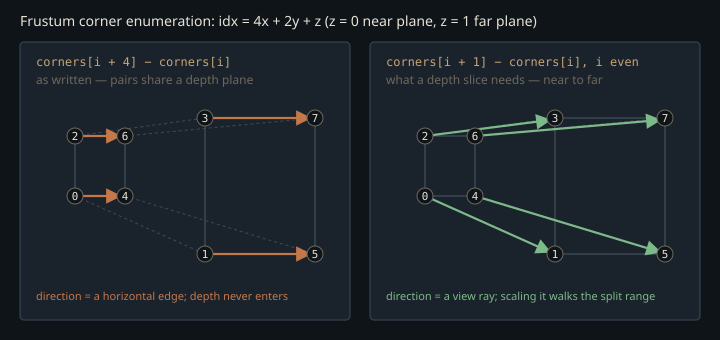

Monograph · Tree · ← Module hub · CSM shadows
deferred
CSM shadows
Cascade split, depth array, unjittered camera.
The path that only runs when ray tracing is off
`CSMPass` is the deferred pipeline's fallback sun shadow: a real render-graph pass that allocates a `D32_SFLOAT` image with one 2048² array layer per cascade, is *meant* to render depth from the light, and hands the array view plus a cascade UBO to the lighting pass. The middle step is the one that does not survive inspection — see *One layer, four broadcasts*.
static constexpr uint32_t SHADOW_MAP_SIZE = 2048;ohao/render/deferred/csm_pass.hpp:16The lighting shader only consults it when the RT shadow mask is absent. `DeferredLightingPass::execute` zeroes the flag word every frame and rebuilds it from the currently bound views: an RT shadow view sets bit 5, and only its absence lets the CSM array view set bit 2.
m_params.flags |= 4; // CSM fallback (bit 2)ohao/render/deferred/deferred_lighting_pass.cpp:173`setRTShadowMask` performs the same bit arithmetic at bind time, but that assignment never reaches the GPU: `execute` overwrites the whole word before pushing it.
That matters for the rest of this page: several defects below survive precisely because the default configuration on an RT-capable device never exercises this path.
Where to cut the frustum
A single directional shadow map spends its texels uniformly in *world* space while the camera needs them uniformly in *screen* space: the near field is starved, the far field wasted. Cascades cut the view frustum along depth and give each slice its own full-resolution map. OHAO places the cuts with the practical split scheme (Zhang et al. 2006), blending a perspective-correct logarithmic split with a uniform one:
Here $n$ and $f$ are the camera near and far planes, $N = 4$ is the cascade count, $i \in [1, N]$ indexes the split, and $\lambda$ weights logarithmic against uniform. The logarithmic term is what the projective mapping actually wants; the uniform term exists because pure log placement collapses the first split onto the near plane whenever $n$ is small.
float d = m_splitLambda * log + (1.0f - m_splitLambda) * linear;ohao/render/deferred/csm_pass.cpp:485`setSplitLambda`'s only caller is a smoke test in `renderer_test`, and it re-sets the value the constructor already holds, so $\lambda$ is 0.95 in every frame the engine renders.
csm.setSplitLambda(0.95f);tests/renderer/renderer_pipeline_tests.cpp:324float m_splitLambda{0.95f}; // 0.95 = mostly logarithmicohao/render/deferred/csm_pass.hpp:100With the renderer's defaults of $n = 0.1$, $f = 1000$ the log term alone puts the first split at 1 m. Evaluating the full formula gives splits near 13.5, 34.5, 132.5 and 1000 units — the 5 % uniform share does all the work at the near end, which is why $\lambda$ is not 1.
Stabilising the cascade
The classic cascade artifact is *swimming*: rotate the camera one degree and every shadow edge crawls, because the light's projection was re-fit to a slightly different region and the depth samples landed on different texels. OHAO kills this in the standard two steps. It bounds each slice with a sphere rather than a box, then quantises the light view's translation to whole shadow texels — computing texels-per-world-unit from the sphere and rounding the light-space origin onto that grid.
float texelsPerUnit = static_cast<float>(SHADOW_MAP_SIZE) / (radius * 2.0f);ohao/render/deferred/csm_pass.cpp:553A tight AABB wastes fewer texels, but its extents change as the camera yaws, so the projection scale changes every frame and no amount of snapping stabilises it. A bounding sphere's radius is invariant under rigid rotation of the corner set: the scale is fixed for a given slice, leaving only translation — which is exactly what snapping can quantise away. Wasted map area is the deliberate price.
The pairing that flattens the split
The slice geometry is built by unprojecting the eight NDC corners of the frustum and walking each near-plane corner toward its far-plane partner by the split fractions. The corners are enumerated by a nested `x, y, z` loop with `z` innermost, so the index is $4x + 2y + z$ — near and far partners are *adjacent* (0↔1, 2↔3, …). The interpolation loop instead pairs `i` with `i + 4`:
glm::vec3 dist = frustumCorners[i + 4] - frustumCorners[i];ohao/render/deferred/csm_pass.cpp:533Index `i` and `i + 4` differ in the *x* bit, not the depth bit: the direction being scaled is a horizontal edge of the near (or far) plane, and the frustum's depth extent never enters the interpolation.

Far-plane corners therefore stay at the far plane for every cascade, so every sphere has to enclose almost the whole view frustum. Evaluating the shipped formula for a 45° vertical FOV, 16:9 camera at the default near and far gives cascade radii of roughly 749, 745, 752 and 946 units — the first three within 1 % of each other, the last only a quarter larger, where the near-to-far pairing would give 13, 31, 122 and 950. Cascade 0's texel footprint is 73 cm rather than 1.3 cm — the split scheme is computed correctly, then discarded by the geometry it feeds. Numbers from the formula, not from a capture.
Three biases stacked against acne
Shadow acne comes from a receiver sampling its own depth across a texel of finite size. The pass attacks it three ways at once. Front-face culling makes the recorded depth the *back* of each occluder, moving self-shadowing error to the far side:
rasterizer.cullMode = VK_CULL_MODE_FRONT_BIT; // Front-face culling for shadowohao/render/deferred/csm_pass.cpp:397A hardware constant-plus-slope bias adds the term that matters at grazing sun angles, scaling with the polygon's slope in light space:
rasterizer.depthBiasSlopeFactor = 1.75f;ohao/render/deferred/csm_pass.cpp:401The lighting shader then subtracts a further constant `shadowBias` (0.012 by default in the C++ `CascadeData`). Front-face culling is the strong lever and it has a real price: single-sided geometry — foliage cards, a ground plane with no underside — has no back face to record and casts no shadow at all, while thin closed objects peter-pan. The `normalBias` and `cascadeBlendWidth` fields the C++ struct fills are read by nothing in the shipping shader.
The depth convention nobody set
`GLM_FORCE_DEPTH_ZERO_TO_ONE` is not defined anywhere in this repository — the only occurrence is a comment in the picking system noting its absence. GLM therefore emits OpenGL-convention matrices with NDC depth in $[-1, 1]$, including the light's orthographic projection:
glm::mat4 lightProj = glm::ortho(-radius, radius, -radius, radius, 0.0f, radius * 2.0f);ohao/render/deferred/csm_pass.cpp:572Vulkan clips against $0 \le z_c \le w_c$, so the near half of that volume — the half containing the occluders closest to the light — would be clipped away entirely. It survives only because depth clamping is enabled, which also disables z-plane clipping and flattens those fragments onto depth 0:
rasterizer.depthClampEnable = VK_TRUE; // Clamp depth to [0, 1]ohao/render/deferred/csm_pass.cpp:394On the sampling side the same $[-1, 1]$ range reaches `calculateShadowCSM`, which rejects any `projCoords.z` below 0 and returns "lit". The frustum-corner unprojection makes the mirror-image assumption, using NDC $z \in \{0, 1\}$ with a comment asserting the Vulkan range. Defining the GLM macro would fix the light projection and break every camera projection that currently agrees with it — a repo-wide change, not a one-line edit.
The sampler that ships, and the one that looks official
`shaders/includes/shadow/shadow_csm.glsl` is the file this unit is nominally about: a 16-tap Poisson-disk PCF kernel, a cascade-index-scaled normal bias, a linear blend across the cascade boundary, and a full PCSS blocker-search / penumbra-estimate path.
float sampleCSM(sampler2DArray shadowMap, vec3 worldPos, vec3 normal,shaders/includes/shadow/shadow_csm.glsl:81No shader `#include`s it, so nothing in it is reachable from any pipeline. Its two entry points, `sampleCSM` and `sampleCSM_PCSS`, have zero callers; the helpers `selectCascade`, `getShadowCoords` and `sampleShadowPCF` are called only from those two dead functions. And unlike the classic "unused function, live formula" case the math is not inlined anywhere either. What runs instead is written directly into the deferred lighting shader, which defines its own `selectCascade` over the live UBO and its own 3×3 box PCF over nine taps — no Poisson disk, no normal bias, no cascade blend:
float calculateShadowCSM(vec3 fragPos, float viewDepth) {shaders/core/deferred_lighting.frag:116The two also disagree structurally: the include's `CascadeData` ends in a `float padding` where the C++ struct and the live UBO both declare a `uint cascadeCount`.
Editing `shadow_csm.glsl` changes nothing that renders. The shipping CSM sampler is `calculateShadowCSM` inside `shaders/core/deferred_lighting.frag`, and it is strictly weaker than the include that appears to be the implementation.
One layer, four broadcasts
The raster side has a matching split personality. The vertex shader applies no projection at all — it writes `gl_Position` as the raw world position and leaves the light transform to the geometry shader:
outWorldPos = (object.model * vec4(inPosition, 1.0)).xyz;shaders/shadow/shadow_csm.vert:26A geometry shader then broadcasts every triangle to all four array layers via `gl_Layer`:
gl_Layer = cascade; // Select cascade layer in texture arrayshaders/shadow/shadow_csm.geom:21That is the standard single-pass layered approach, and it needs a layered framebuffer. `CSMPass::execute` does the opposite: it loops over cascades, begins a render pass each time, and pushes a `cascadeIndex` the geometry shader ignores into a framebuffer built from a single-layer view.
framebufferInfo.layers = 1;ohao/render/deferred/csm_pass.cpp:316The geometry shader also declares its cascade matrices as a descriptor:
layout(set = 0, binding = 0) uniform CascadeMatrices {shaders/shadow/shadow_csm.geom:14`createPipeline` builds its `VkPipelineLayoutCreateInfo` with a push-constant range and nothing else — `setLayoutCount` is left at zero and `pSetLayouts` at null — and `execute` never calls `vkCmdBindDescriptorSets`. No descriptor set backs that UBO, so `gl_Position = cascades.viewProj[cascade] * worldPos` reads undefined data: a layout/shader-interface mismatch the Vulkan spec requires to be consistent.
gl_Position = cascades.viewProj[cascade] * worldPos;shaders/shadow/shadow_csm.geom:25The matrices themselves are not lost — `execute` memcpys them into the persistently-mapped cascade UBO, and `DeferredRenderer` hands that buffer to the lighting pass, where binding 12 feeds the `calculateShadowCSM` that actually ships. Only the geometry shader, the one stage that needs them to *write* the map, misses them.
m_lightingPass->setCascadeBuffer(m_csmPass->getCascadeBuffer());ohao/render/deferred/deferred_renderer.cpp:60Contracts
- `setCameraData` must receive the **unjittered** projection. `DeferredRenderer` passes `m_proj` while the GBuffer pass gets `jitteredProj`; a jittered matrix would nudge every cascade sphere each frame and defeat the texel snapping.
- The lighting shader applies CSM only to lights of type 0 (directional) and only when flag bit 2 is set. Point and spot lights are unshadowed on this path.
- The cascade UBO is a single persistently-mapped allocation written from `execute()` with no per-frame ring buffer, so overlapping frames in flight read whatever the CPU wrote last.
- The shadow sampler is created with `compareEnable = VK_TRUE` and `VK_COMPARE_OP_LESS_OR_EQUAL`, but binding 6 is declared `sampler2DArray` (not `sampler2DArrayShadow`) and the shader compares depths itself. The comparison state is dead, and Vulkan requires a compare-enabled sampler to be used with depth-compare instructions.
Source files
ohao/render/deferred/csm_pass.hppohao/render/deferred/deferred_lighting_pass.cppohao/render/deferred/csm_pass.cpptests/renderer/renderer_pipeline_tests.cppshaders/includes/shadow/shadow_csm.glslshaders/core/deferred_lighting.fragshaders/shadow/shadow_csm.vertshaders/shadow/shadow_csm.geomohao/render/deferred/deferred_renderer.cppParent hub for the full pipeline narrative; this page is the file-level design unit. Sitemap · hover glossary terms anywhere.